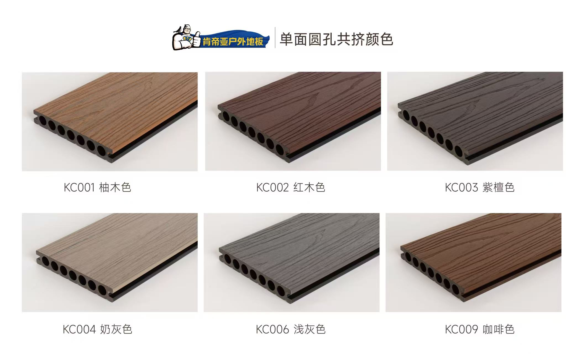

China Factory & Supply Records
WPC Decking Material Factory





WPC decking material, factory stock, and pre-shipment status record.
Records
Factory, materials, packing, warehouse, shipment, loading, and pre-logistics conditions. Kyoken is not selling the lowest price; we are reducing supply-chain uncertainty.

WPC decking material, factory stock, and pre-shipment status record.


WPC decking material, factory stock, and pre-shipment status record.


Advertising material production, pre-shipment check, and packing status record.


Curtain material, processing, and packing status record.
Send product name, photos, dimensions, quantity, and delivery area. A rough quote is provided after specification review.